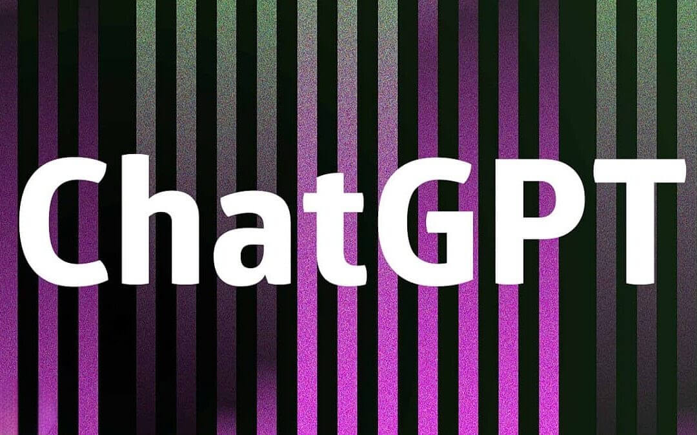

At the start of each new year, I typically compose an insight looking at the major marketing trends for the 12 months ahead. Over the last few years, these trends have been largely the same – content marketing and automation, customer engagement and personalization, and the ongoing move to digital transformation. The same holds true for 2023.
But what is new this year is the buzz around ChatGPT.
For anybody who might not know, ChatGPT is the free platform that lets users give directions to a bot that generates content on almost anything, in a variety of forms and styles (a new commercial version, ChatGPT Plus, was announced on Feb 1 starting at $20 per month.) Developed by OpenAI, a company focused on “shaping the future of technology,” ChatGPT has vast applications. To name just a few: software engineers can use it to direct coding; bankers can use the tool for market and trading analyses; and yes, marketing and communications professionals – from journalists to advertising pros to content creators – can use it to conduct research and draft a range of materials.
So, what does this really mean? And should ChatGPT be welcomed or feared? To get a better understanding, I started experimenting with it and here’s what I found.
Since conducting competitive research is fundamental to marketing, I decided to use ChatGPT and gauge its capabilities in this area. As a pie-in-the-sky test, I asked ChatGPT to provide me with the “best” financial advertising campaigns over the last 20 years and show me ad copy for the launch of a wealth manager in the greater Detroit area. The results were fairly impressive.

First, ChatGPT responded by prefacing that my question could only deliver a “subjective” response. It then proceeded to succinctly detail five campaigns that I recall being interesting, if not effective. I appreciated this honest take on reality – nothing artificial about that. 1
For the ad copy, ChatGPT clearly articulated the foundational issues critical to any wealth management firm. It was also well-written, both from a structural and grammatical perspective, providing a solid baseline effort.

In our fast-paced world, time is always of the essence but takes on even more meaning when tight deadlines need to be met. In marketing, this can often be the case for a variety of issues – from developing an ad and drafting a press release to developing a comprehensive go-to-market plan for immediate deployment. ChatGPT’s ability to conduct research in a fraction of manhour time provides an invaluable shortcut. In addition, the rapid production of the copy can also be an advantage, particularly when a content creator suffers from writer’s block!
While I appreciated ChatGPT’s output (particularly the quick research), it's fair to say that the copy was basically pablum. It read like very generic marketing prose rather than an ad, and it failed to address my regional market query. A recent tweet I reposted from my colleague @JakeWengroff encapsulates my reaction: “AI writing gets the job done like instant coffee gets the job done.” Or to quote Maureen Dowd in her recent NYT column on AI: “For now, ChatGPT is typing, not writing.”
To their credit, OpenAI has admitted ChatGPT has some of these limitations. It points out that the tool “is often excessively verbose” and has issues with accuracy (more on that later) – a healthy reminder that ChatGPT's output is not necessarily gospel. However, it's equally fair to report that OpenAI is committed to addressing the tool's liabilities. On January 31st, the company announced it is testing a new software tool aimed at identifying AI generated text to tackle rising concerns about copyright infringements and plagiarism.
As Axios points out in a series of articles about ChatGPT, “The AI tool can answer a lot of questions, but it doesn't actually ‘know’ anything.” That explains the point of AI: it’s intelligence but it’s still artificial.
Knowledge reflects the ability to take information, examine it, and then relate it to experience. ChatGPT can collect and interpret data, but it has no real understanding of what happens in our world or how it operates. Nor does it understand context or offer nuance, which at the end of the day, is the essence of good marketing.
OpenAI is aware that the current version of ChatGPT does not necessarily deliver "truthful" answers, and as characterized in a piece from Coliabri.ai, Chat GPT "sometimes writes plausible sounding but incorrect or non-sensical answers.” While this was not my specific experience, it stands to reason. Without real knowledge, ChatGPT cannot distinguish fact from fiction in all the data it mines, nor can it recognize paradoxes and ambiguities.
As marketers, creativity is often the diamond to our craft, but accuracy is the bedrock. This includes not only building programs based on the right strategy but also referencing sources to support content claims – another capability ChatGPT does not offer right now.
ChatGPT is currently in very high demand, no doubt fueled by all the hype and fascination. At first, I couldn’t access the platform for hours, even after multiple tries. But lately, it's been even worse. So, be prepared for a wait when looking to use ChatGPT. Until there is an expansion of its bandwidth, the delays to use the platform may only get exaggerated. Alternatively, for those who opt to subscribe to ChatGPT Plus, the access problem is likely to be eliminated.
The advancements in AI have been rapid and ChatGPT is just one product on the AI train that has left the technology station. As the Internet totally revolutionized media, marketing and communications in the 1990s, so will AI in the years ahead. The evidence is clear as the use of AI has already been hiding in plain sight.
Apparently, news outlets such as the Associated Press and newswires like Bloomberg, Dow Jones and Reuters have been experimenting with AI for years to support fact-gathering. Meanwhile, Buzzfeed just announced it plans to use ChatGPT to create quizzes on its site.
That said, ChatGPT may very well be a game changer and the seeming motivation behind Microsoft’s investments in OpenAI that include an initial $1 billion in 2019 and a recent $10 billion infusion. ChatGPT is now expected to become part of the Microsoft’s suite of business services, potentially making it a ubiquitous tool in our everyday working. With that, greater functionality is only a matter of time.
The applications will get much more specific. Right now, ChatGPT's output is largely generic, but the developers are working to make it more specific. As Axios points out, "the real power of AI is expected to come when companies and organizations combine AI tools with their own data." As we marketers already know, the marriage of technology platforms and proprietary data is the formula to yield significant results and measurable ROI.
Greater accuracy is expected. AI companies – whether it’s OpenAI, Google or Amazon – will keep pushing to improve accuracy. This is expected to be the next big leap in AI but there is no guarantee that the accuracy issue can be completely overcome.
There is considerable fear that the rise of AI will eliminate the need for people and therefore jobs – including those in marketing. I’d be lying if I didn’t think that might present some level of inevitability. But there are a few significant mitigating factors.
As previously mentioned, the need for human judgment, which AI does not possess, is essential. Remember, airplanes have been flying on autopilot for years but it’s the captain of an aircraft that still oversees the controls. To quote Maureen in her recent New York Times column on AI, "The creative spark requires humanity. But soon, A.I. could be sentient.”
For now, ChatGPT is a tool that can help lay the groundwork, informing marketing strategies and supporting the delivery of results. Marketing pros can use it to jumpstart work in expediting information gathering and setting content standards before applying context and creativity to make their end-products uniquely meaningful to clients.
It’s also already clear that the ability to work with AI, just like the ability to work with data analytics, is a needed skill set. According to VentureBeat, the freelance marketplace Fiverr, has experienced a 1,400% increase in searches for AI-related services over the last six months. This includes looking for talent that can take advantage of AI technologies, including generative AI capabilities for image and text generation to improve marketing, sales and business operations. There is also a new demand for freelancers to help organizations with proofreading and fact checking.
Greater accuracy is expected. AI companies – whether it’s OpenAI, Google or Amazon – will keep pushing to improve accuracy. This is expected to be the next big leap in AI but there is no guarantee that the accuracy issue can be completely overcome.
AI is here to stay and with ChatGPT the game is on. If there's a critical lesson strategic marketers and creative types have learned over the years, it's that it's smarter to embrace new technology than ignore it. Don't fall behind or let yourself be replaced by a new shiny object. Rather, take the time to learn what it can do for you, and then leverage it, to make you a better and more skilled practitioner.
This Insight was prepared by Maria Lilly and Jake Wengroff. Feel free to reach out with any questions or comments.
1. ChatGPT identified the top four financial advertising campaigns in the last 20 years as follows: "The Journey" campaign by Charles Schwab from 2007-2010; "Wake-up" campaign by TD Ameritrade from 2011-2012; "Power of Together" by Fidelity Investments from 2016-2018; and "This is Getting Real" by Wells Fargo from 2018-2019.